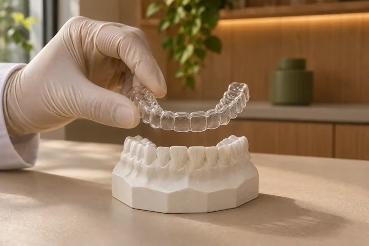

Uma primeira conversa
Para reorganizar o cuidado, discutir um incômodo ou entender uma mudança que você percebeu no sorriso.
Ver na avaliação
Escolha o motivo da sua visita.
Para reorganizar o cuidado, discutir um incômodo ou entender uma mudança que você percebeu no sorriso.
Ver na avaliação
Para falar sobre os cuidados do dia a dia e revisar o acompanhamento já iniciado.
Ver na avaliação
Para conversar sobre o que você gostaria de mudar e tirar dúvidas sobre alinhadores.
Ver na avaliaçãoA recepção é onde você pode informar o motivo da visita. No consultório, a conversa segue com o dentista, que explica a avaliação e como será feito o acompanhamento.

Você pode trazer exames anteriores e perguntas. A visita também pode começar só com uma conversa.
Conte à equipe o motivo da visita e se já passou por algum tratamento relacionado.
Converse com o dentista sobre o que ele observou e sobre as dúvidas que você trouxe.
Confirme o que ficou combinado, quais informações faltam e como será feito o próximo contato.
Sim. Se o objetivo for conhecer possibilidades, escolha Primeira avaliação e leve as perguntas que quer discutir.
A avaliação ajuda a definir o que faz sentido para o seu caso. Pergunte o que cada opção inclui e se algum exame será necessário.
Se já tiver exames, você pode levá-los. A equipe orienta se precisa de alguma informação adicional.
A equipe combina data e horário no retorno. O envio do pedido inicia esse contato.
Informe o motivo da visita e o período em que prefere conversar.
Em um atendimento real, a equipe entraria em contato para combinar a consulta.